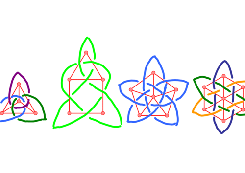

- 
Come on, tell me you got it right! No?! Try again. Remember, each crossing occurs at the middle of an edge and each edge bears a crossing.
Now move on to make beautiful knots based on lattices and walls.
All the versions of this article: [Deutsch] [English] [Español] [français] [עברית] [italiano] [Português do Brasil]

Come on, tell me you got it right! No?! Try again. Remember, each crossing occurs at the middle of an edge and each edge bears a crossing.
Now move on to make beautiful knots based on lattices and walls.

Thursday 17 August 2006, by